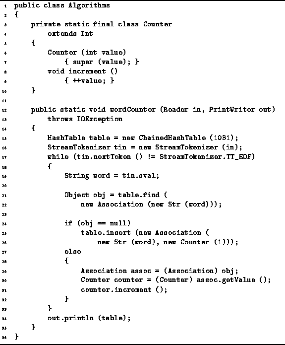

Data Structures and Algorithms
with Object-Oriented Design Patterns in Java
Data Structures and Algorithms
with Object-Oriented Design Patterns in JavaHash and Scatter tables have many applications. The principal characteristic of such applications is that keyed information needs to be frequently accessed and the access pattern is either unknown or known to be random. For example, hash tables are often used to implement the symbol table of a programming language compiler. A symbol table is used to keep track of information associated with the symbols (variable and method names) used by a programmer. In this case, the keys are character strings and each key hash associated with it some information about the symbol (e.g., type, address, value, lifetime, scope).
This section presents a simple application of hash and scatter tables.
Suppose we are required to count the number of occurrences of
each distinct word contained in a text file.
We can do this easily using a hash or scatter table.
Program  gives the an implementation.
gives the an implementation.

Program: Hash/scatter table application--counting words.
The static inner class Counter extends
the class Int defined in Section .
In addition to the functionality inherited from the base class,
the Counter class adds the method increment
which increments the value by one.
The wordCounter method does the actual work of counting the words in the input file. The local variable table refers to a ChainedHashTable that is used to keep track of the words and counts. The objects which are put into the hash table are all instances of the class Association. Each association has as its key a String class instance, and as its value a Counter class instance.
The wordCounter method reads words from the input stream one at a time. As each word is read, a find operation is done on the hash table to determine if there is already an association for the given key. If none is found, a new association is created an inserted into the hash table. The given word is used as the key of the new association and the value is a counter which is initialized to one. On the other hand, if there is already an association for the given word in the hash table, the corresponding counter is incremented. When the wordCounter method reaches the end of the input stream, it simply prints the hash table on the given output stream.
The running time of the wordCounter method depends on a number of factors, including the number of different keys, the frequency of occurrence of each key, and the distribution of the keys in the overall space of keys. Of course, the hash/scatter table implementation chosen has an effect as does the size of the table used. For a reasonable set of keys we expect the hash function to do a good job of spreading the keys uniformly in the table. Provided a sufficiently large table is used, the average search and insertion time is bounded by a constant. Under these ideal conditions the running time should be O(n), where n is the number of words in the input file.
 Copyright © 1998 by Bruno R. Preiss, P.Eng. All rights reserved.
Copyright © 1998 by Bruno R. Preiss, P.Eng. All rights reserved.